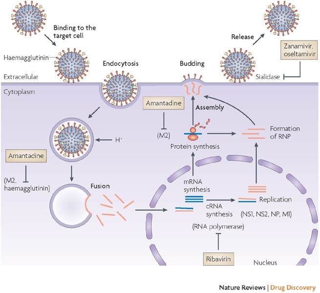
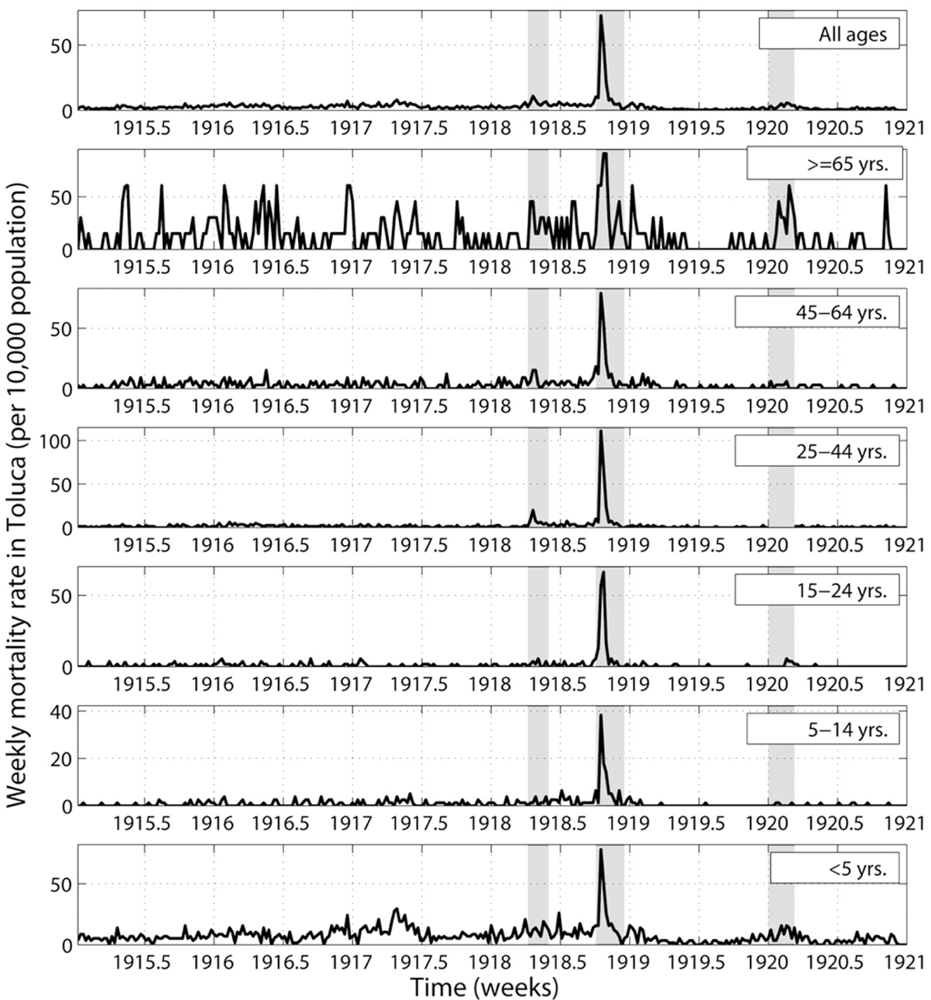
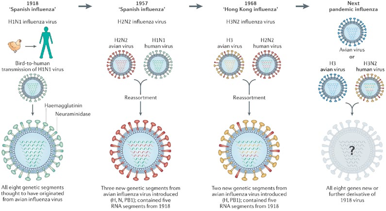
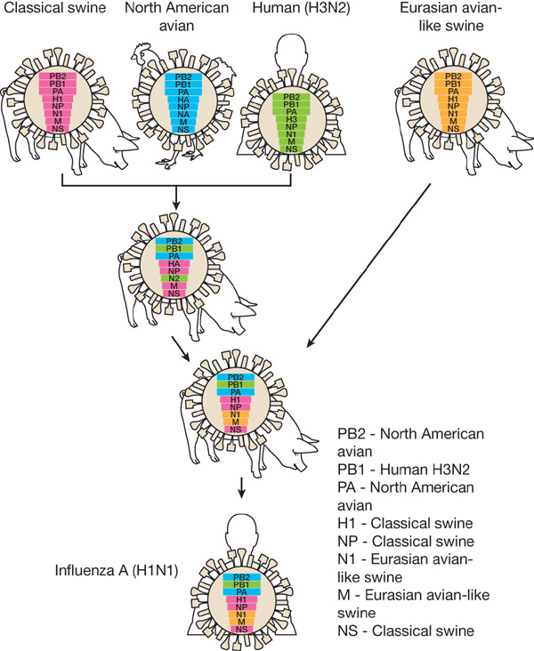
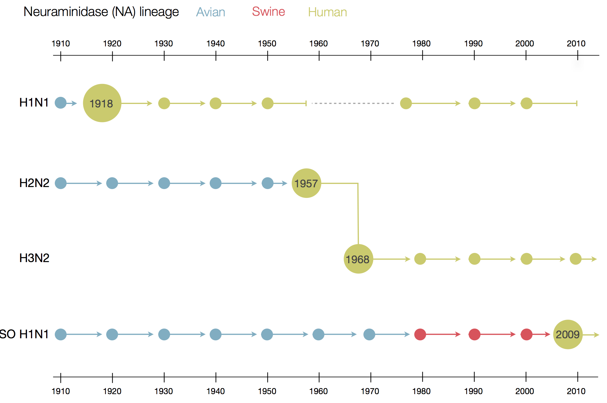

Influenza
Influenza virion
Influenza life cycle

1918 "Spanish flu"

Flu pandemics caused by host switch events
Host switch events often occur through reassortment

Host switch events often occur through reassortment

Reassortment creates different histories

Influenza B does not have pandemic potential
Phylogenetic trees of different influenza lineages
nextflu
Shows seasonal evolution of influenza viruses


 Shows seasonal evolution of influenza viruses
Shows seasonal evolution of influenza viruses